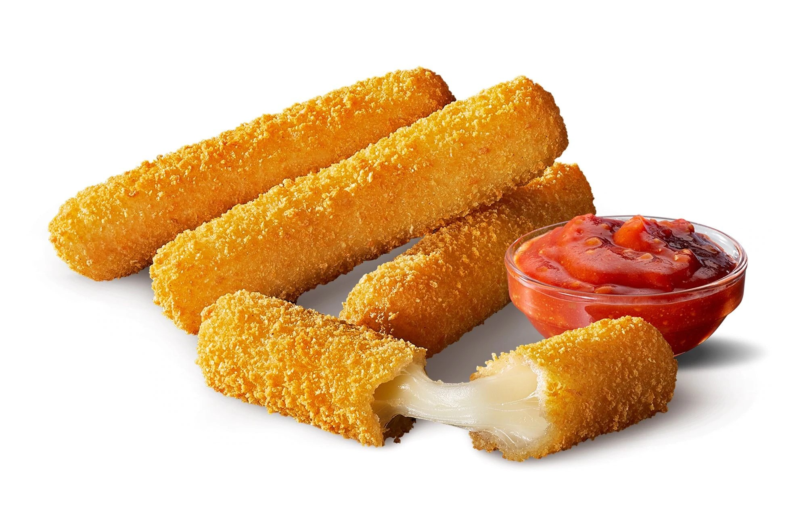

Mozzarella Sticks
These mozzarella sticks are crispy and cheesy! They're perfect for a party or a casual meal.
Ingredients:
- 1 pound mozzarella cheese, cut into 1-inch cubes
- 1/2 cup all-purpose flour
- 1 teaspoon salt
- 1/2 teaspoon black pepper
- 1 egg, beaten
- 1 cup breadcrumbs
- 1/2 cup Parmesan cheese, grated
- 1/4 cup vegetable oil
Instructions:
- Preheat the oven to 400 degrees F (200 degrees C).
- In a shallow bowl, combine the flour, salt, and pepper.
- In a separate shallow bowl, beat the egg.
- In a third shallow bowl, combine the breadcrumbs and Parmesan cheese.
- Dip the mozzarella cubes in the flour mixture, then the egg mixture, then the breadcrumb mixture.
- Place the mozzarella sticks on a baking sheet lined with parchment paper.
- Bake the mozzarella sticks for 10-12 minutes, or until golden brown and bubbly.
- Serve immediately with marinara sauce for dipping.